사진으로 보는 "명훈"
By Myunghoon
기본적인 자기소개는 README에 있어서
이번에는 제가 좋아하는 사진들 보여드리면서,
저에 대해서 말씀드리면 더 이해하기 좋을 것 같아서
좋아하는 사진들을 가지고 왔어요!
README 읽으러 가기
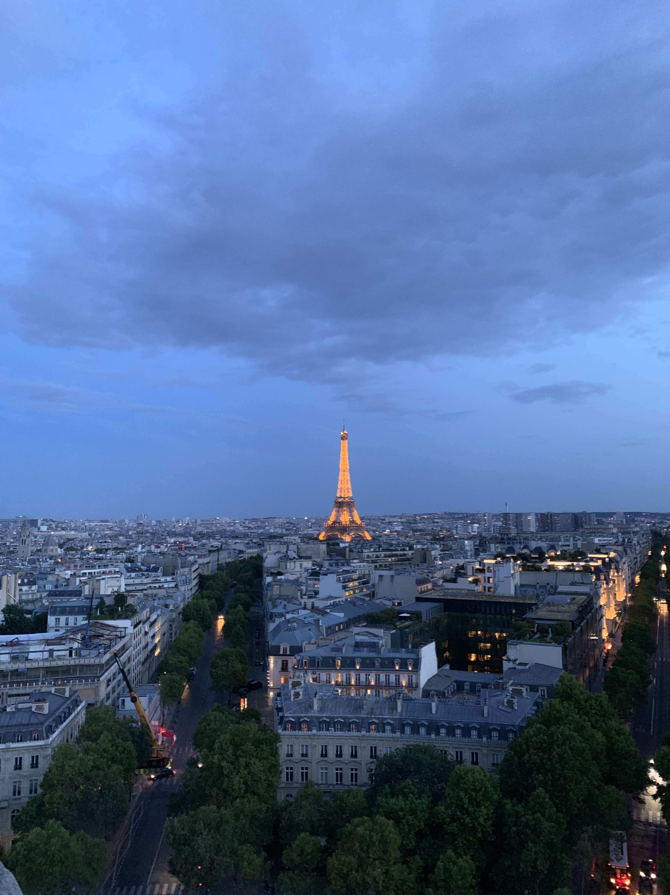
첫번째 사진은 19년도 여름에 유럽으로 한달간 배낭여행 갔을 때 찍은 사진이에요!
저는 여행다니는 걸 정말 좋아하기도 하고, 평소에도 이곳저곳 구경하는 거 좋아하는데
유럽여행 갔을 때 기억이 정말 좋았어서 그 때 사진들을 먼저 보여드릴까 해요 :)
파리-런던-포르투-마드리드-바르셀로나-니스-파리
이렇게 다녀왔는데, 여러 도시들 중 파리가 정말 좋은 기억으로 저한테 남아있는 것 같아요
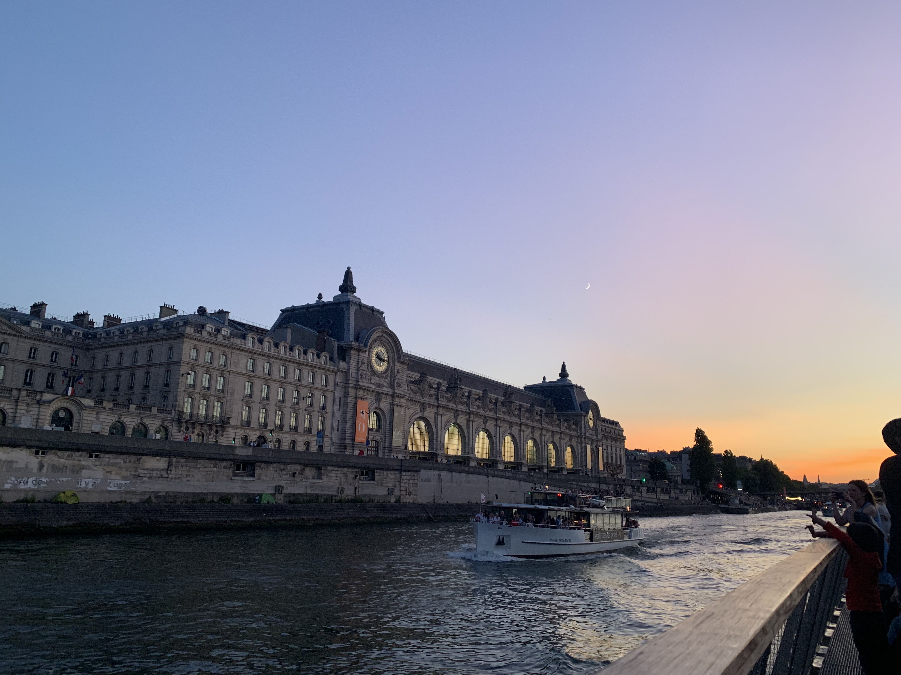
파리에서의 계획을 혼자 다 짜서 기억에 남는 곳이 많기도 했고,
날씨랑 그 파리 자체의 거리 분위기가 되게 좋았어서
꼭! 다시 가보는 게 제 목표 중 하나에요,,
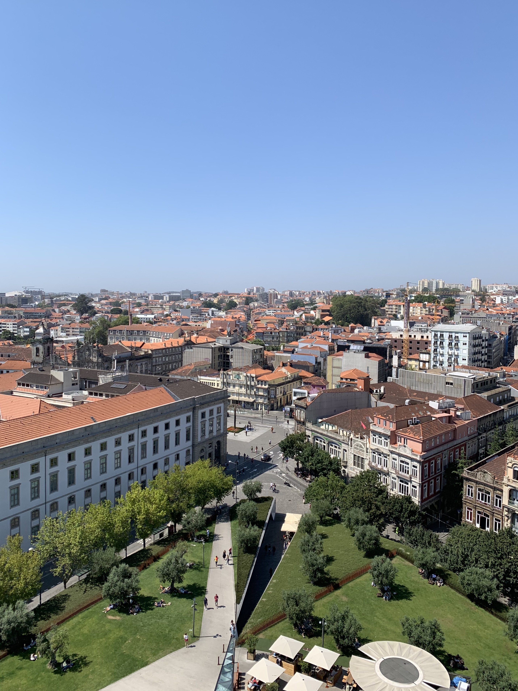
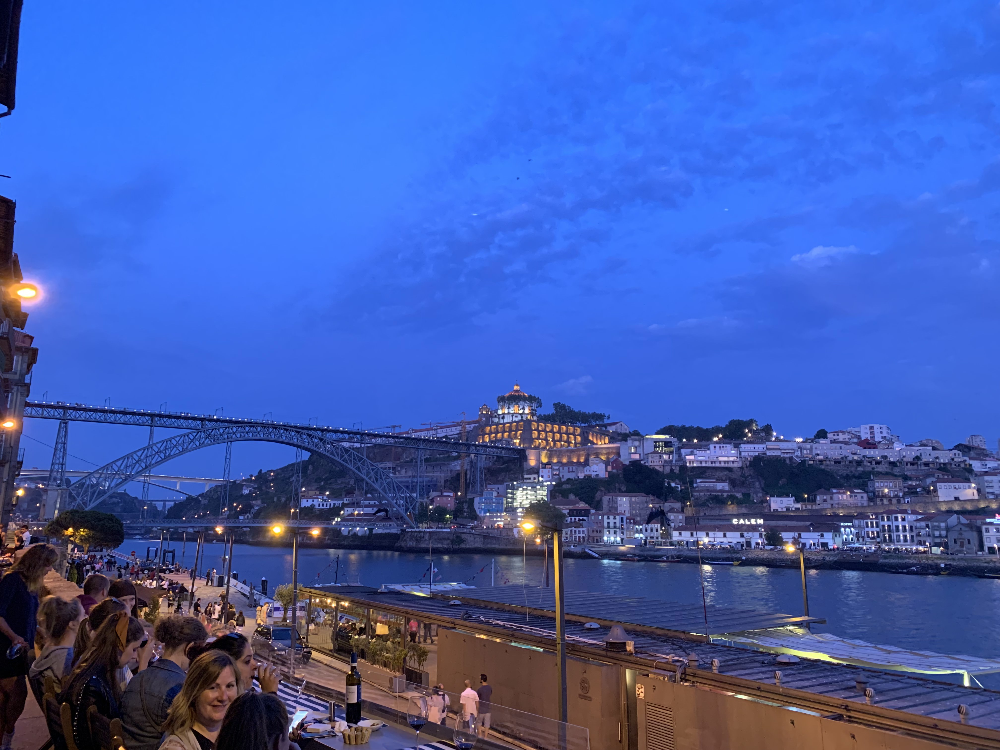
이 두 곳은 포르투갈의 도시인 포르투이고,

푸른 바다 사진은 프랑스 남부 도시 '니스'에서 찍은 사진인데,
유명한 대도시들보다 이런 소도시들이
현지인들이 실제로 살아가는 방식대로 살아볼 수 있고
관광지 느낌이 아닌 정말 자연스러운 느낌이라
오히려 기억에 많이 남더라고요
그래서 오히려 저는 이런 소도시들 가보는 거 정말 추천합니다!
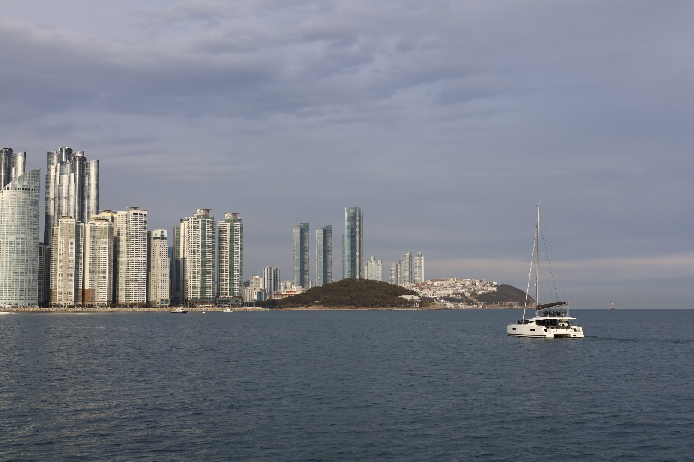
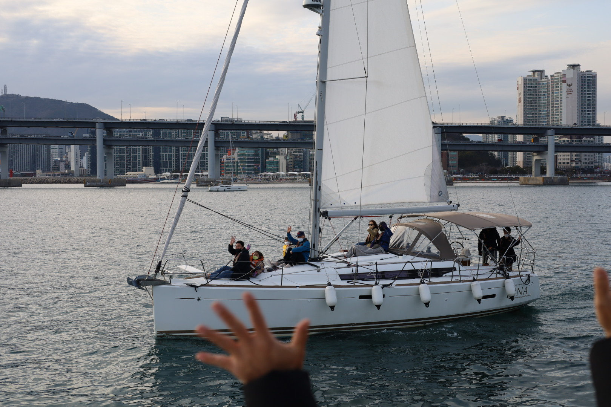
국내여행도 좋아하는데, 그 중에 부산을 제일 좋아해요!
맛있는 것도 정말 많고 바다도 예쁜데,
해운대에서 요트 타면 정말 기분이 좋더라고요!
부산가시면 해가 질 무렵에 요트 타보시는 거 정말 추천해요!!
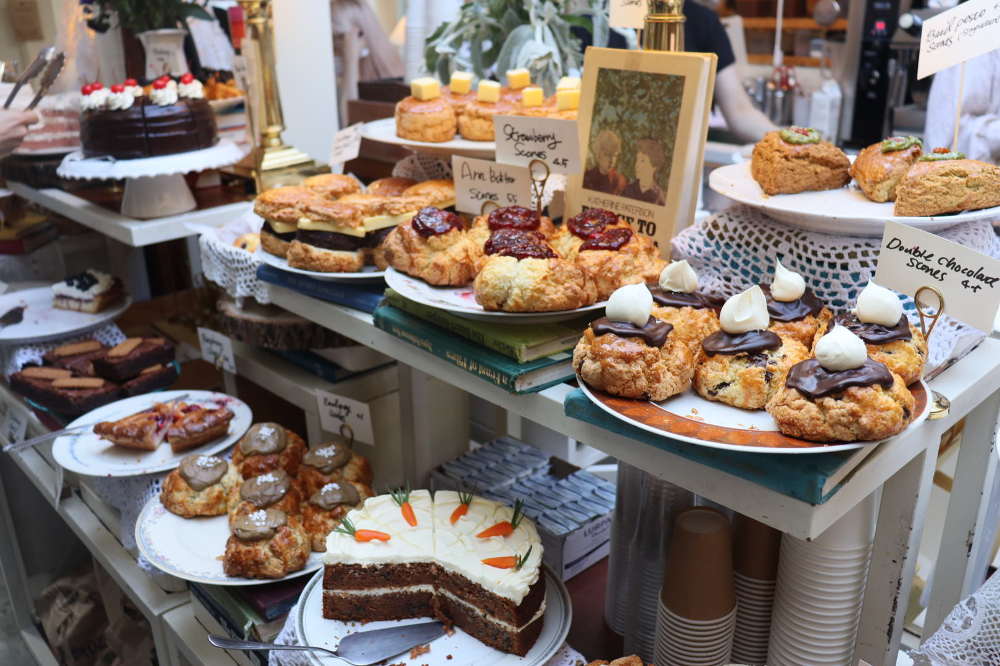
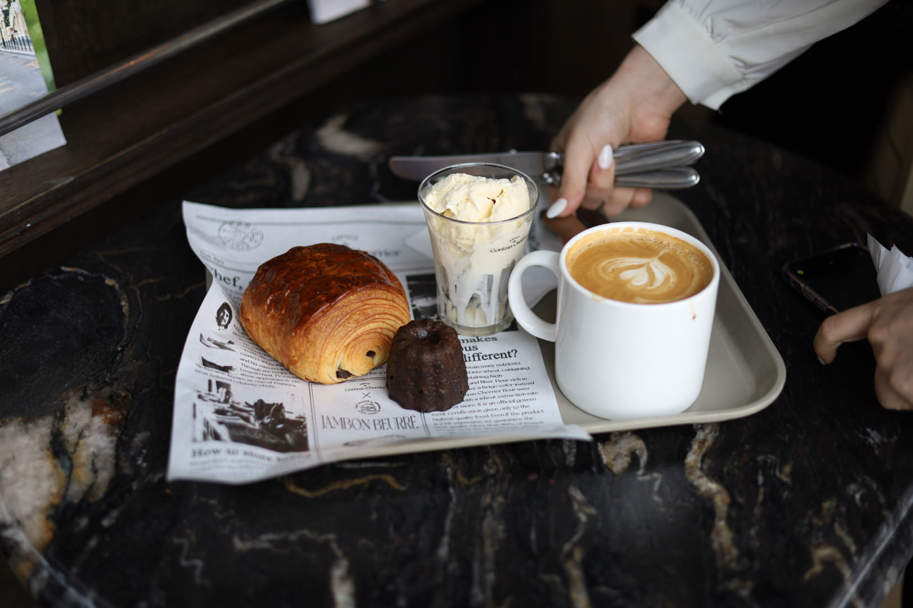
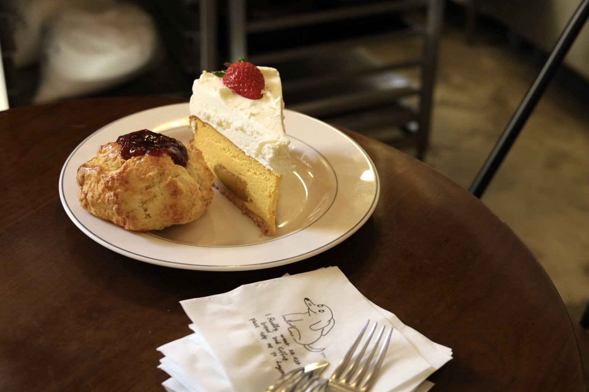
그리고 먹는 것 중엔 특히 빵을 좋아하는데,
케익이나 카눌레 처럼 단 것도 좋아하지만
스콘이나 소금빵처럼 조금 빵맛이 많이 나는 것들을 좀 더 좋아하는 것 같아요,,
빵 좋아하시는 분 있으시면 연락주세요...!
고등학교 바로 앞에 레이어드 본점이 있었어서 스콘 먹으러 자주 갔었고,
요즘은 동네 빵집들 자주 가요!
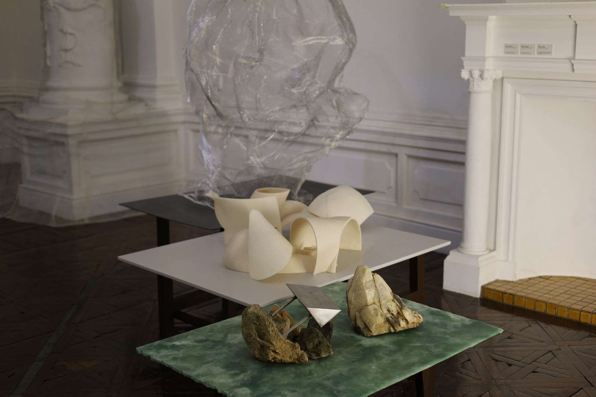
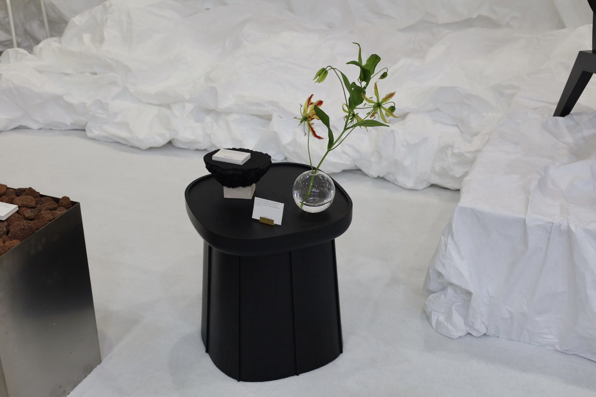
그리고 시간나면 전시보러 가는 거 좋아하는데,
최근에는 어머니랑 서울 디자인 리빙 페어 다녀왔는데 좋더라고요 :)
어머니가 플로리스트 하셨어서, 어릴 때부터 꽃시장이나 전시회 자주 따라 다녔었는데
그때 그랬던 것들이 제 취향에 조금 영향을 준 것 같아요
하지만 그렇다고 취향이 다 이런 게 아니라, 왠만한 운동 보는 거 하는 거 다 좋아하고(남중남고!)
힙합이랑 팝 엄청 좋아하기 때문에 이런 부분들 알고 계시면
아마 서로 친해지는 데 조금이나마 도움이 될 듯 해요!
혹시나 궁금하신 거 있거나 친해지고 싶으면 언제든 디엠 주세요!
all copyrights reserved by @myunghoon